用鼓掌的雙手做環保
鼓掌的雙手，還能做什麼？

先別急著下結論，讀完再說說你的想法～
這一篇講雪隆慈濟的環保：從晚上十點沿街撿回收物，到97個環保站、348個環保點。
你會讀到自己買下回收廠的志工、改用環保袋的公司，還有一位「能動一天，就做一天」的阿嬤。
下面是原書的節錄，紅色底線是我們替你標出的轉折點。
讀之前：你覺得做環保，最重要的是什麼？
垃圾變黃金
1990年，上人在臺中的一場演講。閱讀引導
「……希望大家能『以鼓掌的雙手，將垃圾分類，做資源回收』，建立人間淨土。」
上人呼籲・p.613慈濟人響應上人呼籲，將回收的錢化為愛心，做到「垃圾變黃金，黃金變愛心」，慈濟環保志業拓展由此開始。

黃金變愛心！
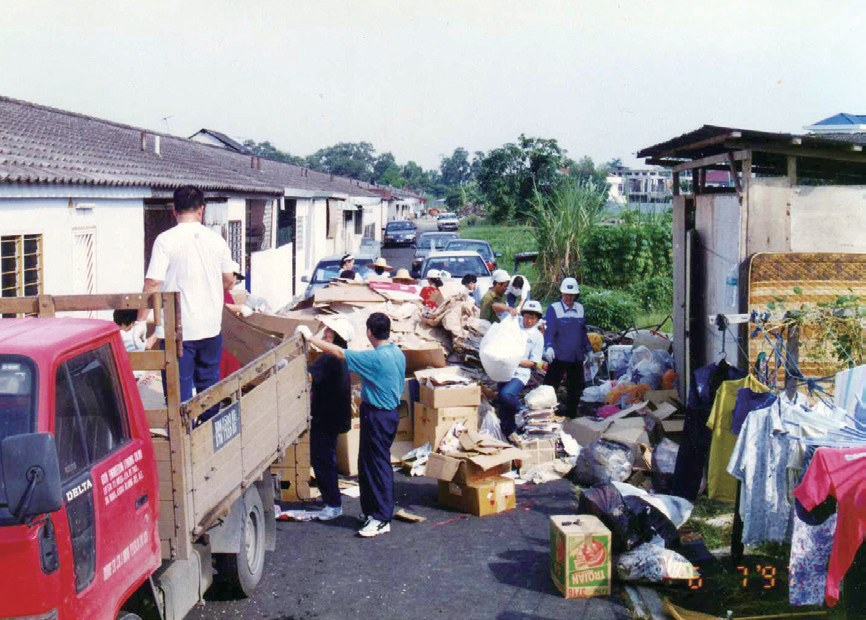
1996年1月，吉隆坡慈濟人成立資源回收組
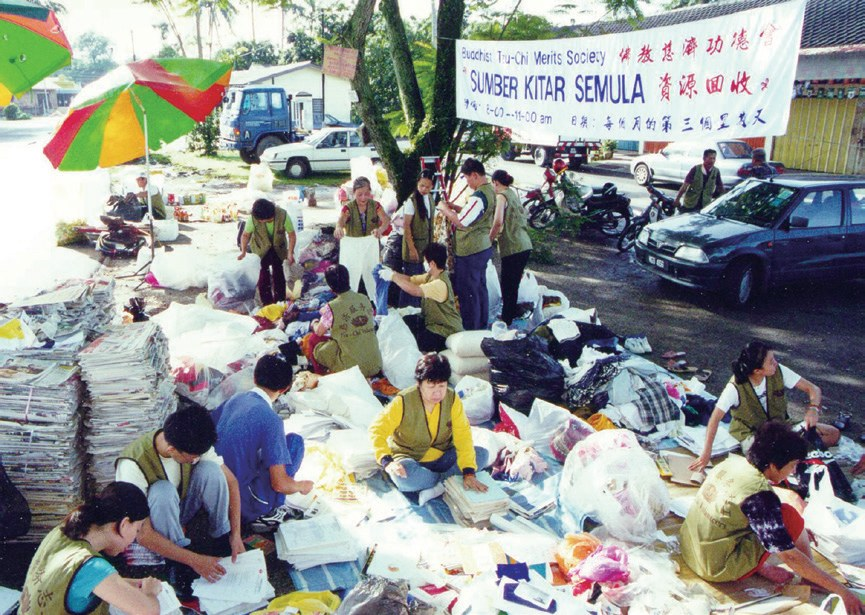
每次活動結束前志工都會將租借場恢復整潔；讓民眾見證環保定點不會造成困擾，反而能友愛環境

場地比原來還乾淨。
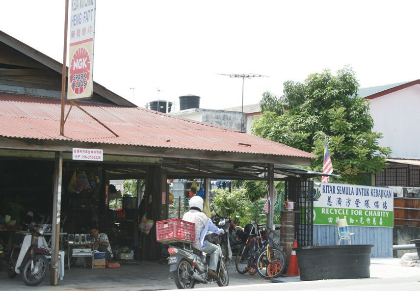
「……雖然吉隆坡很難找到像臺灣環保站那樣的大型空間來存放回收物，但只要志工用心經營，相信小小空間也能發揮良能！」
環保站志工賴玉華說・p.617- 97個環保站p.617
- 348個環保點p.617
- 8,752人次環保志工p.617
回收廠關了，怎麼辦？
沙巴找不到回收商，勞勿的村民沒聽過「環保」。閱讀引導
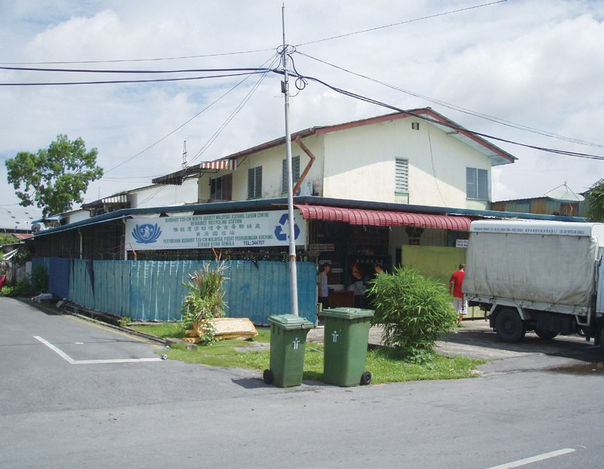
沙巴亞庇慈濟人從1997年就開始推動環保，然而卻苦無回收商願意回收資源。志工四處尋訪，終於找到距離亞庇兩百公里的金馬尼士的回收廠。
然而在2000年3月再次面臨回收廠關閉。為了持續推動環保，亞庇志工黃靖發（濟珀）發心收購該廠，將回收廠命名為「綠淨環保有限公司」。

就自己買下來！
2003年12月，慈濟志工首次前往彭亨州勞勿縣的雙溪蘭新村，舉辦環保茶會及資源回收活動。
進行垃圾分類後，大家漸漸改變了浪費資源的習慣，讓當地的生活環境變得乾淨又整潔。
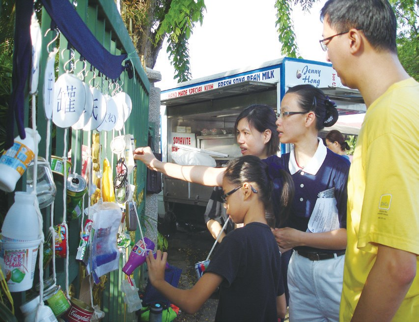
2011年7月30日，慈濟雪隆分會舉辦「七月吉祥祈福會」，首次推動一日素的素食宣導活動，成功號召超過六十家餐館響應，為大眾提供免費的素食餐。

也是環保？
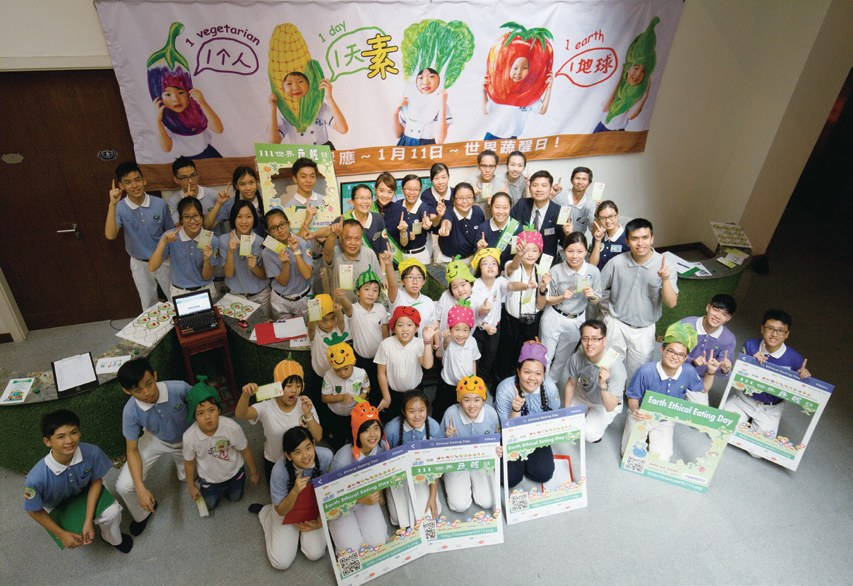
七十二萬個塑膠袋
醫生、老闆，把環保帶進了醫院和公司。閱讀引導
吉隆坡中央醫院婦產科的伍寶燕醫師，除了加入慈濟人醫會的義診，也積極推廣環保，愈是投入，愈讓她深刻地感覺到保護地球的重要性，因此下定決心，堅持在醫院推動環保。
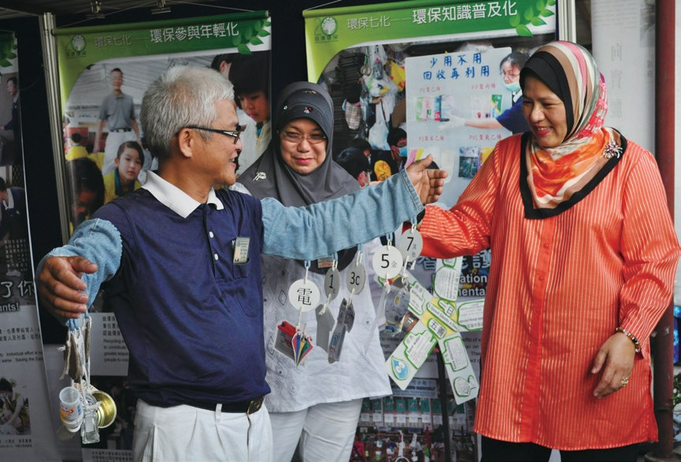
中央醫院自此成為馬來西亞第一所實施環保計劃的政府醫院。
做環保的政府醫院！
在高層主管的認同支持下，公司初步規劃落實零塑膠袋行動，規定所有合作經銷商在訂購產品時，需自備環保袋。
初期推動時，因客戶不能接受，導致業績下滑，但公司仍堅持友善環境的初衷。
還要堅持嗎？
猜一猜閱讀引導
公司堅持請客戶自備環保袋，一年後省下了多少個塑膠袋？
能動一天，就做一天
一位麵攤老闆娘、一位阿嬤、一位修冷氣的師傅。閱讀引導
剛開始沒有募集的來源，鄧淑蓮和幾位志工，只能在晚上十點等店家關閉後，才沿街尋找可回收的資源，進行分類。
首次回收資源賣得六百令吉，讓大家更有信心推動環保。
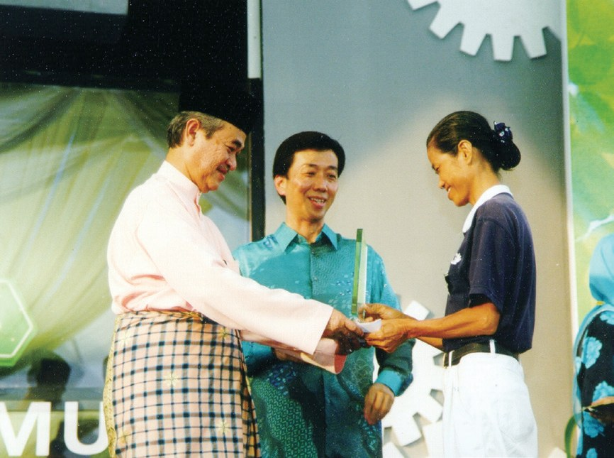
鄧淑蓮從不敢開貨車到自掏腰包買貨車、重考駕照，然後克服恐懼感，風雨無阻的開著回收車忙碌在各環保點及回收場，她覺得這就是自己的菩提道。
「……我告訴自己要在回收的過程中修正自己的身、口、意，單純地『做就對了』！」
鄧淑蓮認為・p.628
也去考駕照了！
2003年禤翠萍因為收看大愛電視，體會「人生無常」、「因緣果報」的道理，開始投入環保，不曾停歇。
「從前出門打麻將，招手就叫的士；現在，我走路出門收善款，一去一回常常要一個小時！」
禤翠萍說・p.629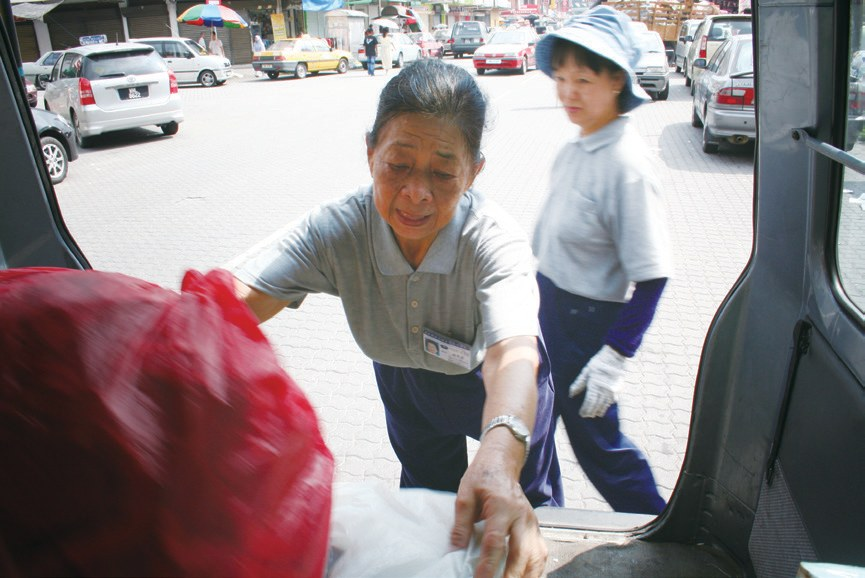
「做到死為止，做到我不能動為止；能動一天，就做一天。」
有人問她要做到幾時，禤翠萍說・p.630她真的做到最後一口氣，投入環保十一年。2014年5月4日那天早上做完了環保，晚間就在家中安詳往生，享壽78歲。
做到最後一天。
從事修理汽車冷氣行業的陳春明，2004年因閱讀了《考驗》一書，被證嚴上人的智慧所感動。
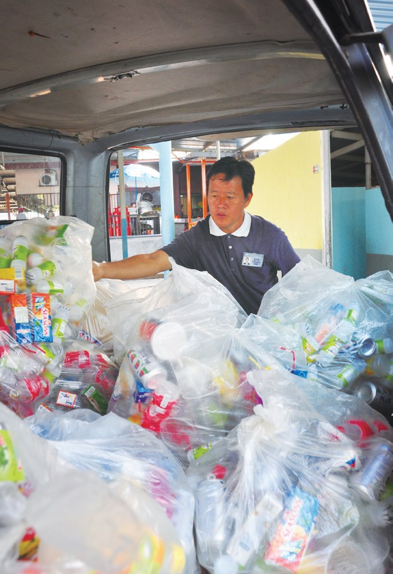
「……加入慈濟後，上人的身教與精神感動了我。我要跟著上人的腳步，改掉自己的習氣，消除無明的煩惱，少欲知足就是心靈環保。」
陳春明透露・p.631環保從「心」起
首相頒獎，上人勉勵。閱讀引導
2003年11月9日馬來西亞全國環保日，政府於布城廣場舉行頒獎儀式，由馬來西亞第五任首相拿督斯里阿都拉巴達威，頒發「支持國家環保計劃榮譽獎」予慈濟。
慈濟是三個獲獎的非政府機構之一，更是唯一的華人佛教團體。
頒獎給慈濟！
「……環保必須從『心』起，只要有心，把握因緣與時間，人人都可以將愛的行動、美善的觀念，推廣到每一個地方。」
上人勉勵・p.633停一停：誰讓你記住了？閱讀引導
選一位你印象最深的人。沒有標準答案。
有人堅持在醫院推環保，有人為環保重考駕照，有阿嬤做到最後一天，有人放下生意守護環保站。哪一位讓你最有感覺？

一起回頭看看吧～
回望
依本章原文整理，每一條都標了原書頁碼。閱讀引導
背後原因
為什麼要做環保

小川垃圾丟掉就好，為什麼要一樣一樣分類？
- 垃圾變黃金
回收的錢化為愛心，垃圾變黃金，黃金變愛心。p.613
- 不浪費
垃圾分類後，改變了浪費資源的習慣。p.619
- 心靈環保
環保必須從「心」起。p.633
後續發展
環保一路走來

小禾從上人的一場演講到97個環保站，經過了多少年？
- 1990.8.23
上人呼籲用鼓掌的雙手做環保。p.613
- 1995.5
簡慈露在馬六甲宣導環保。p.613
- 1996.1
吉隆坡成立資源回收組。p.614
- 1998
東馬第一個環保站在古晉成立。p.616
- 2003.11.9
獲頒「支持國家環保計劃榮譽獎」。p.632
- 2011.7
蕉賴太子園社區環保站成立。p.630
環保走進了哪裡
一分善念傳出去
小禾環保從志工家裡，走到了哪些地方？
- 第一圈東馬
古晉成立東馬第一個環保站。p.616
- 第二圈醫院
中央醫院成為第一所實施環保計劃的政府醫院。p.624
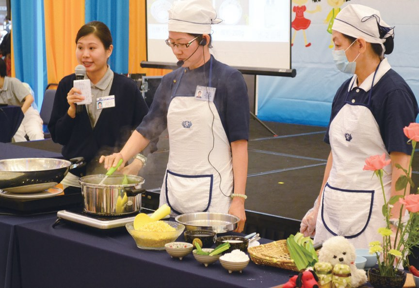
第三圈公司公司落實零塑膠袋行動。p.624
以上只整理本章寫到的事；書裡沒寫到的，我們不替它下結論。
回頭看讀前的選擇閱讀引導
進行垃圾分類後，村民改變了浪費資源的習慣（p.619）；陳春明說少欲知足就是心靈環保（p.631）；上人說環保必須從「心」起（p.633）。分類、減量都要做，最根本是心靈環保。
後來為什麼不在乎別人的眼光了？
只有你自己看得到喔！
準備好了就一起出發～